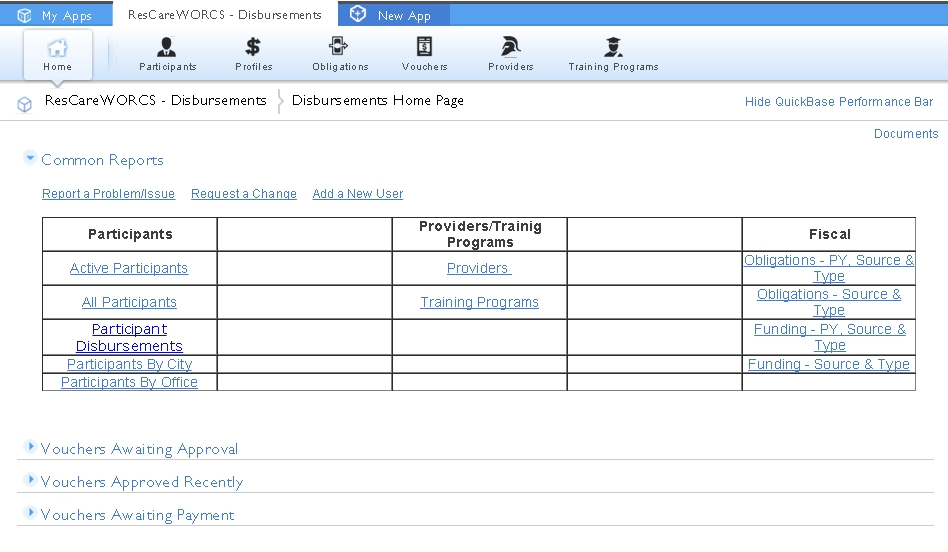

Home Page
Home Page - You can return to the Home Page at anytime by clicking on the "Home" icon. The look of the Home Page may vary slightly depending upon the role of the user (Case Manager, Manager, Project Accountant, Administrator, etc.).

Created with the Personal Edition of HelpNDoc: Easily create PDF Help documents